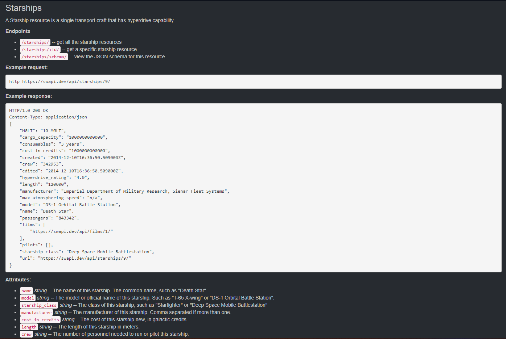
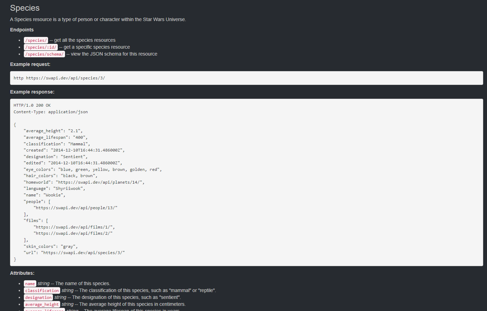
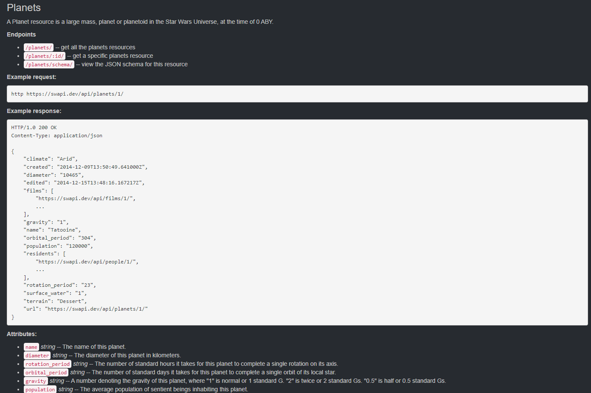
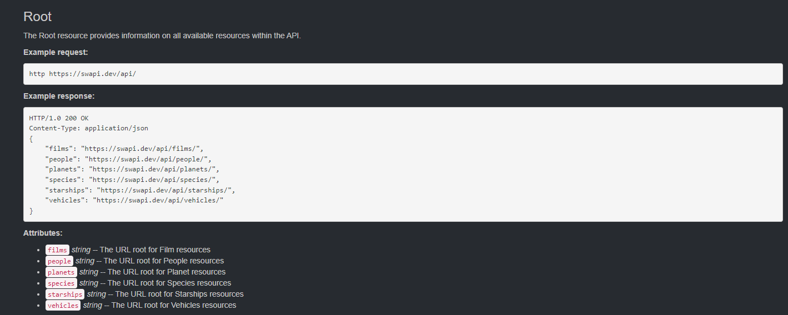

O que é a SWAPI?
A API Star Wars, ou "SWAPI" é a primeira fonte de dados quantificada e programáticamente acessível do mundo para todos os dados do universo canônico de Star Wars! Pegamos todo o material contextual rico do universo e formatamos em algo mais fácil de consumir com software. Então colocamos uma API na frente para que você possa acessar tudo!
Todos os dados são acessíveis através de nossa API web HTTP.

O recurso pessoas trás diversas informações sobre os personagens do universo de Star Wars.
O recurso naves trás diversas informações sobre as mais variadas naves do universo de Star Wars.
O recurso espécies trás diversas informações sobre todas as espécies conhecidas do universo de Star Wars.
O recurso planetas trás diversas informações sobre os planetas conhecidos do universo de Star Wars.
Todos os recursos disponíveis da API
VoltarAcesse a API